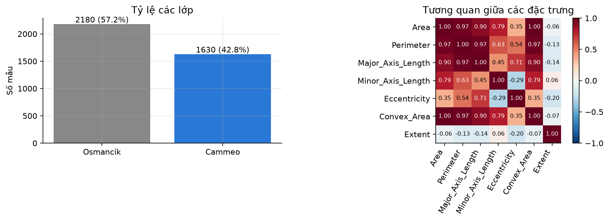
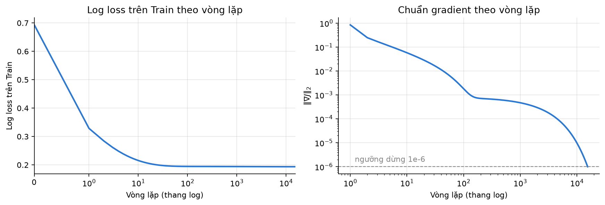
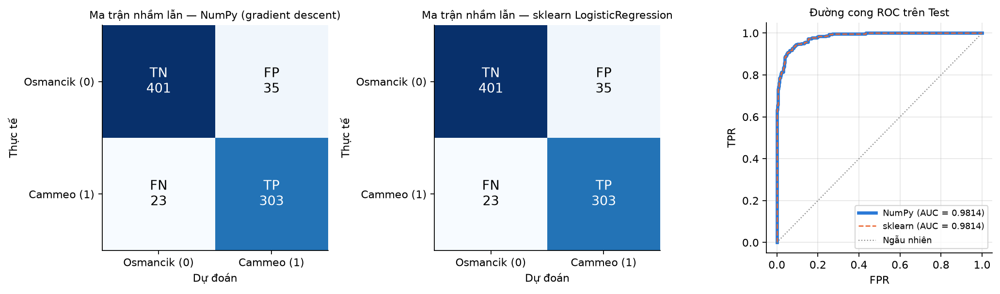
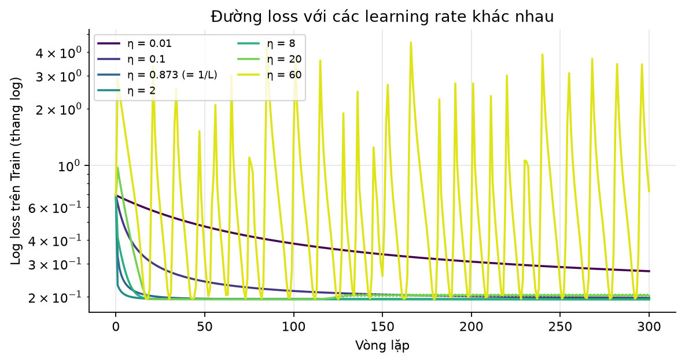
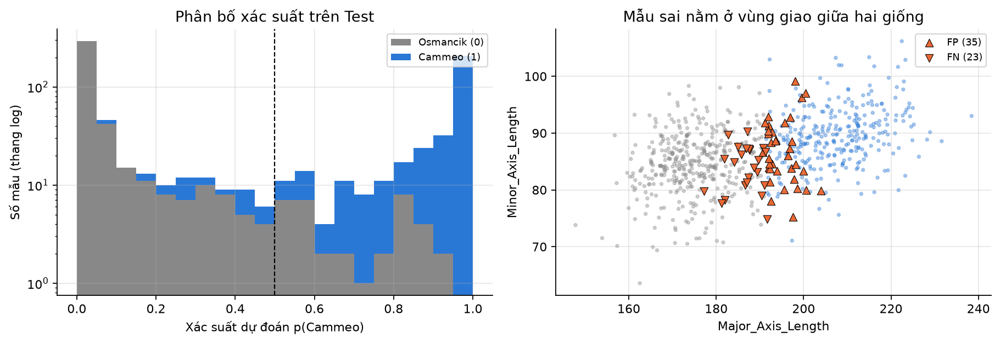
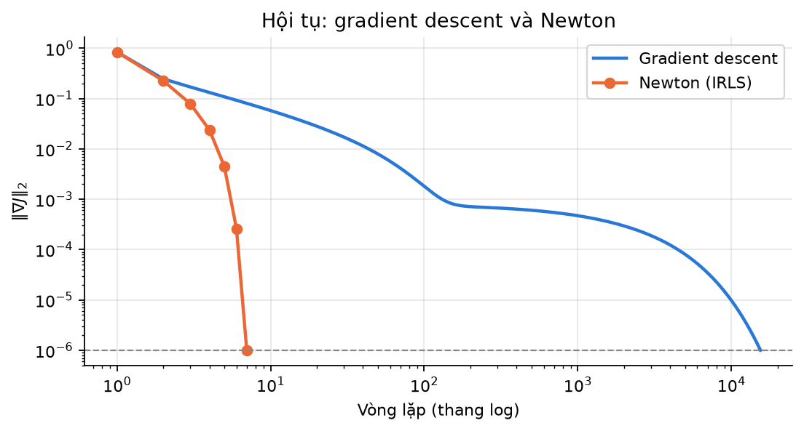
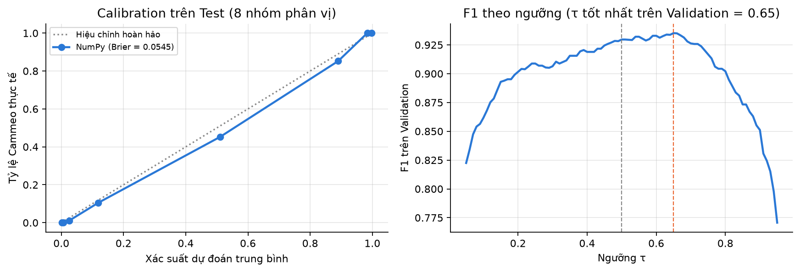

| Giảng viên: | TS. Nguyễn Xuân Đức |
| Học viên: | Trần Vũ Trường |
| Mã học viên: | B26CHKH096 |
| Lớp: | M26CQKH02-B |
Báo cáo cài đặt Logistic Regression nhị phân bằng NumPy (score, sigmoid, log loss, gradient descent cập nhật trọng số và bias) và so sánh với sklearn.linear_model.LogisticRegression trên bộ dữ liệu Rice (3.810 hạt gạo, 7 đặc trưng hình thái, 2 giống). Hai bản được cho tối ưu cùng một hàm mục tiêu nên cho kết quả trùng nhau trên tập Test: accuracy 0,9239, F1 0,9127, ROC-AUC 0,9814, log loss 0,1767; xác suất dự đoán lệch nhau tối đa 3,0 × 10−5. Khác biệt nằm ở tốc độ: gradient descent cần 15.476 vòng lặp, bộ giải lbfgs của sklearn cần 43 vòng, phương pháp Newton tự cài cần 6 vòng. Nguyên nhân là các đặc trưng kích thước gần cộng tuyến. Lỗi phân loại tập trung ở các hạt có kích thước trung gian giữa hai giống.
Đối tượng: một hạt gạo được chụp ảnh. Đầu vào: 7 đặc trưng hình thái trích từ ảnh. Đầu ra: giống gạo, Cammeo hoặc Osmancik. Quy ước lớp dương y = 1 là Cammeo; precision, recall và F1 trong báo cáo đều tính cho lớp này.
Mục tiêu: (1) tự cài Logistic Regression bằng NumPy, không dùng mô hình hay bộ tối ưu có sẵn; (2) huấn luyện LogisticRegression của scikit-learn trên cùng dữ liệu đã tiền xử lý; (3) so sánh hai bản bằng accuracy, precision, recall, F1, ROC-AUC, log loss và ma trận nhầm lẫn; (4) nhận xét về sự hội tụ, chênh lệch giữa hai bản và các lỗi phân loại thường gặp.
Bộ dữ liệu Rice (Cammeo and Osmancik) lấy từ UCI Machine Learning Repository (id 545), do Cinar và Koklu công bố năm 2019. Dữ liệu gồm 3.810 mẫu, không có ô thiếu và không có dòng trùng lặp.
| Đặc trưng | Ý nghĩa |
|---|---|
| Area | Số pixel bên trong đường biên hạt gạo |
| Perimeter | Chu vi đường biên |
| Major_Axis_Length | Độ dài trục chính (đoạn dài nhất vẽ được trên hạt) |
| Minor_Axis_Length | Độ dài trục phụ |
| Eccentricity | Độ lệch tâm của elip tương đương (gần 1 là dẹt dài) |
| Convex_Area | Số pixel của bao lồi nhỏ nhất chứa hạt |
| Extent | Tỷ lệ diện tích hạt trên diện tích hình chữ nhật bao quanh |
Nhãn và tỷ lệ lớp: Osmancik 2.180 mẫu (57,2%), Cammeo 1.630 mẫu (42,8%). Hai lớp lệch nhẹ; mô hình luôn đoán lớp đông hơn sẽ đạt accuracy khoảng 57%, nên accuracy vẫn dùng được nhưng cần đọc kèm precision và recall.
Cộng tuyến: các đặc trưng kích thước tương quan rất mạnh với nhau (Area và Convex_Area: 0,999; Area và Perimeter: 0,966). Đặc điểm này không làm giảm độ chính xác nhưng quyết định tốc độ hội tụ của gradient descent (mục 6.1).

Mã nguồn nằm trong src/logreg_numpy.py, chỉ dùng phép toán mảng. Ký hiệu theo Slide 6 (tr. 10–22):
LogisticRegression(C=1.0, tol=1e-10, max_iter=10000), phạt L2, bộ giải lbfgs, huấn luyện trên cùng Xtrain đã chuẩn hoá. Đặt tol rất nhỏ để lbfgs chạy tới nghiệm chính xác; nhờ đó chênh lệch còn lại giữa hai bản, nếu có, đến từ thuật toán tối ưu chứ không do dừng sớm.
DummyClassifier(strategy="prior"): luôn dự đoán xác suất bằng tỷ lệ lớp trên Train (Slide 6, tr. 8–9).
Gradient descent dừng theo điều kiện ‖∇J‖ < 10−6 sau 15.476 vòng lặp. Log loss trên Train giảm từ 0,6931 xuống 0,1936: sau 10 vòng còn 0,2155, sau 100 vòng còn 0,1946, sau 1.000 vòng còn 0,1942.

Ngưỡng quyết định τ = 0,5. ROC-AUC và log loss tính từ xác suất dự đoán; các chỉ số còn lại tính từ nhãn dự đoán.
| Mô hình | Accuracy | Precision | Recall | F1 | ROC-AUC | Log loss |
|---|---|---|---|---|---|---|
| Baseline (theo tỷ lệ lớp) | 0,5722 | 0,0000 | 0,0000 | 0,0000 | 0,5000 | 0,6827 |
| NumPy, gradient descent | 0,9239 | 0,8964 | 0,9294 | 0,9127 | 0,9814 | 0,1767 |
| sklearn LogisticRegression | 0,9239 | 0,8964 | 0,9294 | 0,9127 | 0,9814 | 0,1767 |
| Thực tế | NumPy — dự đoán | sklearn — dự đoán | ||
|---|---|---|---|---|
| Osmancik (0) | Cammeo (1) | Osmancik (0) | Cammeo (1) | |
| Osmancik (0) | TN = 401 | FP = 35 | TN = 401 | FP = 35 |
| Cammeo (1) | FN = 23 | TP = 303 | FN = 23 | TP = 303 |

| Tham số | NumPy | sklearn | |chênh lệch| |
|---|---|---|---|
| Area | 0,478278 | 0,477203 | 1,1 × 10−3 |
| Perimeter | 0,436460 | 0,436017 | 4,4 × 10−4 |
| Major_Axis_Length | 0,937057 | 0,937019 | 3,8 × 10−5 |
| Minor_Axis_Length | -0,257752 | -0,257997 | 2,4 × 10−4 |
| Eccentricity | 1,412588 | 1,412545 | 4,3 × 10−5 |
| Convex_Area | 2,028721 | 2,030460 | 1,7 × 10−3 |
| Extent | 0,045565 | 0,045558 | 7,1 × 10−6 |
| bias b | -0,772030 | -0,772011 | 1,9 × 10−5 |
Hàm mục tiêu J trên Train: NumPy 0,195243365, sklearn 0,195243364, chênh 1,1 × 10−9. Xác suất dự đoán trên Test lệch tối đa 3,0 × 10−5.
Với η = 1/Lmax, log loss giảm đơn điệu, không có vòng lặp nào loss tăng. Phần lớn mức giảm diễn ra trong 100 vòng đầu, nhưng phải tới vòng 15.476 chuẩn gradient mới xuống dưới 10−6. Đuôi hội tụ dài này do cộng tuyến: Hessian tại nghiệm có trị riêng lớn nhất 0,106 và nhỏ nhất 4,6 × 10−4, số điều kiện khoảng 231. Mặt loss có hướng rất phẳng, gradient descent đi rất chậm dọc hướng đó.
Thí nghiệm learning rate (300 vòng mỗi giá trị) cho đủ các dạng đường loss mô tả ở Slide 5, tr. 14 và tr. 18: η = 0,01 giảm quá chậm; η từ 0,87 đến 8 giảm đều; η = 20 dao động quanh nghiệm; η = 60 nhảy liên tục và không hội tụ. Độ cong thật lớn nhất (0,106) nhỏ hơn nhiều so với cận Lmax = 1,146, nên η = 1/Lmax an toàn nhưng dè dặt, và ngưỡng mất ổn định thực tế nằm quanh 2/0,106 ≈ 19.
| η | Log loss Train sau 300 vòng | Số vòng loss tăng |
|---|---|---|
| 0,010 | 0,2739 | 0 |
| 0,100 | 0,1975 | 0 |
| 0,873 | 0,1945 | 0 |
| 2,000 | 0,1943 | 0 |
| 8,000 | 0,1939 | 0 |
| 20,000 | 0,2021 | 115 |
| 60,000 | 0,7288 | 80 |

Mô hình sai 58/762 mẫu Test (7,6%): 35 FP (Osmancik bị đoán là Cammeo) và 23 FN (Cammeo bị đoán là Osmancik).
| Nhóm | Số mẫu | Area | Trục chính | Trục phụ | p trung bình |
|---|---|---|---|---|---|
| TN — Osmancik đoán đúng | 401 | 11.470 | 175,0 | 84,5 | 0,060 |
| FP — Osmancik đoán thành Cammeo | 35 | 13.120 | 195,2 | 86,6 | 0,698 |
| FN — Cammeo đoán thành Osmancik | 23 | 12.084 | 186,6 | 83,8 | 0,268 |
| TP — Cammeo đoán đúng | 303 | 14.430 | 207,7 | 89,5 | 0,931 |

Phương pháp Newton tự cài bằng NumPy, cập nhật θ ← θ − H−1∇J, hội tụ sau 6 vòng với cùng ngưỡng dừng, vì không bị ảnh hưởng bởi số điều kiện. Ngược lại, khi không chuẩn hoá đặc trưng, Lmax tăng lên 8,3 × 107 nên bước học an toàn chỉ còn 1,2 × 10−8; sau 20.000 vòng log loss mới giảm tới 0,668 và accuracy Test là 0,671 (Slide 5, tr. 17).

| Phương pháp | η | Số bước cập nhật | Log loss Train sau 30 epoch |
|---|---|---|---|
| Batch (N mẫu) | 0,873 | 30 | 0,1981 |
| Mini-batch (B = 64) | 0,300 | 1.071 | 0,1947 |
| SGD (B = 1) | 0,020 | 68.580 | 0,1942 |
Tính theo số lượt duyệt dữ liệu, mini-batch và SGD xuống gần nghiệm nhanh hơn batch; đổi lại đường loss của SGD dao động quanh nghiệm thay vì giảm đều.
| C | CV log loss (5 fold) | SE |
|---|---|---|
| 0,001 | 0,3580 | 0,0023 |
| 0,01 | 0,2237 | 0,0021 |
| 0,1 | 0,1974 | 0,0016 |
| 1 | 0,1958 | 0,0017 |
| 10 | 0,1935 | 0,0017 |
| 100 | 0,1917 | 0,0020 |
| 1000 | 0,1917 | 0,0021 |
CV log loss thấp nhất ở C = 100; theo quy tắc một sai số chuẩn (Slide 5, tr. 45), C = 10 là mô hình đơn giản nhất còn trong ngưỡng. Trên Test, C = 100 cho accuracy 0,9304 và log loss 0,1700, so với 0,9239 và 0,1767 của C = 1. Mức cải thiện này nhỏ hơn bề rộng khoảng tin cậy ở Bảng 9.
| Chỉ số | Giá trị trên Test | Khoảng tin cậy 95% (bootstrap) |
|---|---|---|
| Accuracy | 0,9239 | [0,904; 0,942] |
| Precision | 0,8964 | [0,861; 0,927] |
| Recall | 0,9294 | [0,899; 0,956] |
| F1 | 0,9127 | [0,888; 0,934] |
| ROC-AUC | 0,9814 | [0,974; 0,988] |
| Log loss | 0,1767 | [0,148; 0,208] |

Mã nguồn công khai: https://github.com/RubyBarSchool/nhan-dang-mau-bt2-logistic-regression
pip install -r requirements.txt jupyter nbconvert --to notebook --execute --inplace B26CHKH096_TranVuTruong_BaiTap2.ipynb
Hoặc mở notebook và chọn Restart & Run All. Dữ liệu nằm sẵn trong data/, không cần tải thêm. Môi trường đã chạy: Python 3.12, NumPy 2.5.3, scikit-learn 1.9.1.